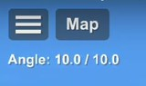

Chegar a órbita pode ser uma missão muito difícil para iniciantes, se esse é seu caso, seus problemas acabaram! Com alguns passos, você vai aprender a chegar a órbita. Caso queira uma blueprint, você pode fazer o download dessa aqui que fiz exatamente para isso: ver blueprint.
Lance seu foguete e logo após isso, começe a inclinar-lo para a direita. Para saber a inclinação correta para a altura atual, olhe ao lado superior esquerdo, abaixo do botão "map"
